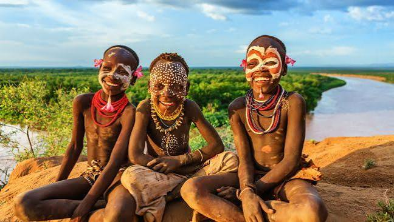

Ethiopia has a rich and diverse culture, influenced by its long history and the various ethnic groups that inhabit the country. The Ethiopian people are known for their traditional music, dance, and art, which reflect the country's heritage and daily life. Ethiopia is also home to unique culinary traditions, with dishes like injera (a sourdough flatbread) being a staple in many households.

The country's cultural practices are deeply rooted in its religious traditions, with Christianity and Islam being the predominant faiths. Festivals and celebrations play a significant role in Ethiopian culture, bringing communities together to honor historical events and religious observances. Additionally, Ethiopia has a strong oral tradition, with storytelling and poetry being integral parts of its cultural expression.